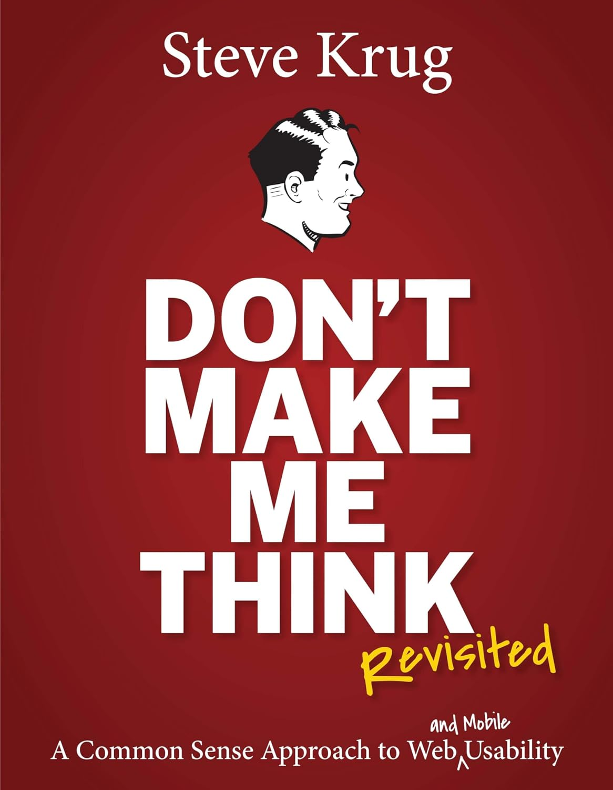

My skills & strengths
I am a strategic thinker who enjoys solving problems, working with others, and creating high-quality work. I am especially motivated by challenges that allow me to learn and grow.
My skills
- Thinking outside the box I enjoy approaching problems from different perspectives and finding creative solutions.
- Strategic thinking My background in Marketing Management has taught me to think about the bigger picture and how different decisions connect to an overall goal.
- Collaboration I enjoy working with others, listening to different ideas, and contributing to a positive team environment.
- Communication I care about communicating ideas clearly and making sure that people feel heard and included.
- Attention to detail I take pride in my work and like noticing the small details that can make a project feel more complete.
- Quality-focused I care about delivering work that I can be proud of and I try to identify and correct mistakes rather than overlooking them.
- Adaptability I enjoy learning new things and figuring out how to approach unfamiliar tasks and challenges.
- Empathy I genuinely care about other people's perspectives and try to create an environment where everyone feels comfortable contributing.
How I think about design
I want my designs to be visually interesting, but they should also have a purpose. I like thinking about who will use something, what they need, and how I can make the experience simple and understandable.
I enjoy combining creativity with strategy. Instead of only thinking about how something looks, I try to understand the problem first and then find a solution that makes sense for the people experiencing it.
A book that influences my designs

Don't Make Me Think — Steve Krug
I was introduced to Don't Make Me Think by Steve Krug during my Marketing Management studies, and it is a book that has stayed with me.
One of the main ideas I take from it is that good design should feel intuitive. When I work on my own designs, I try to put myself in the user's position and think about whether something is clear, understandable, and easy to navigate.
It reminds me not to overcomplicate things just because I can. I want my designs to look good, but I also want people to understand them without having to stop and figure everything out.
What matters to me
For me, good design is about finding a balance between creativity, strategy, and the people who will actually use what I create.
I am still learning and developing my skills, but I genuinely enjoy the process of improving, experimenting, receiving feedback, and seeing an idea turn into something real.